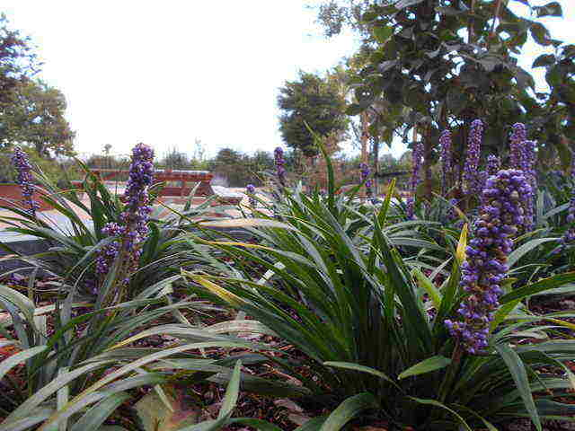

Mijn portfolio
Wie ben ik?
Mijn 3 sterke punten
- Sterk in talen
- Ethisch
- Gemotiveerd
Mijn 3 zwakke punten
- Niet altijd even grondig
- Weinig voorkennis (humane wetenschappen/lerarenopleiding Godsdienst en Engels)
- Logica
Mijn favoriete foto

Foto van de tuin in Thomas More Geel